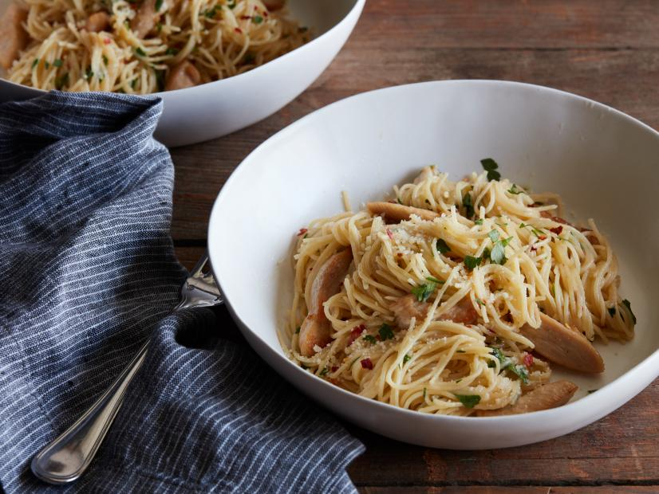

Chicken Scampi

Description
Lightly fried chicken in a lemon sauce
Ingredients
- Kosher salt
- 1 pound thinly-sliced chicken cutlets, cut into 1/2-inch-thick strips
- 3 tablespoons olive oil
- 8 tablespoons unsalted butter, cubed
- 6 cloves garlic, sliced
- 1/2 teaspoon crushed red pepper flakes
- 1/2 cup dry white wine
- 12 ounces angel hair pasta
- 1 teaspoon lemon zest plus the juice of 1 large lemon
- 1/2 cup freshly grated Parmesan
- 1/2 cup chopped fresh Italian parsley
Steps
- Bring a large pot of salted water to a boil for the pasta. Sprinkle the chicken with some salt. Heat a large skillet over medium-high heat until hot, then add the oil. Working in 2 batches, brown the chicken until golden but not cooked through, 2 to 3 minutes per batch. Remove the chicken to a plate.
- Melt 4 tablespoons of the butter in the skillet. Add the garlic and red pepper flakes and cook until the garlic just begins to turn golden at the edges, 30 seconds to 1 minute. Add the wine, bring to a simmer and cook until reduced by half, about 2 minutes. Remove from the heat.
- Meanwhile, cook the pasta until very al dente, reserving 1 cup of the pasta water. Add the pasta and 3/4 cup pasta water to the skillet along with the chicken, lemon zest and juice and the remaining 4 tablespoons butter. Return the skillet to medium-low heat and gently stir the pasta until the butter is melted, adding the remaining 1/4 pasta water if the pasta seems too dry. Remove the skillet from the heat, sprinkle with the grated cheese and parsley and toss before serving.